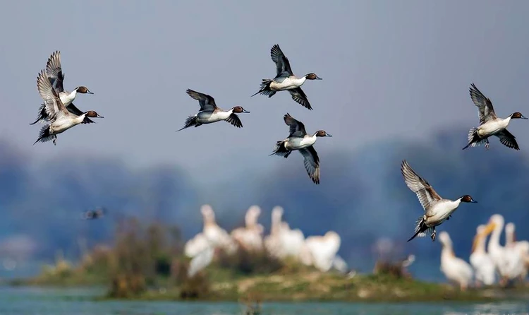
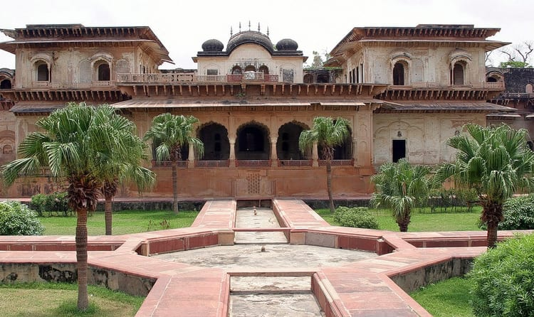
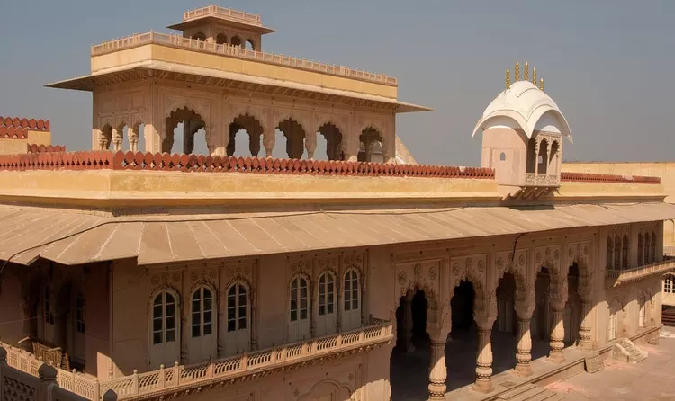

Often referred as the 'Eastern Gate of Rajasthan', Bharatpur is located in the Braj region of state Rajasthan. The city is drenched by its culture, chivalry and romance woven into ballads and folklore can be heard from miles. An exotic offbeat destination that serves tourists with authentic Rajasthani traditions, religious occasions mark devotion of the state people.
Also known as Lohagarh, it is a part of the golden tourism triangle of Delhi, Jaipur and Agra, this place attracts a considerable number of national and international tourist every year. It is also the home of Keoladeo National Park, which habitats over 370 species of animals and birds. It is recognised as one of the most popular birds feeding and breeding grounds.
WHAT IS THE BEST TIME TO VISIT?
The perfect time to visit Bharatpur is between October to March, when you get to see spectacular views of migratory birds at the Bharatpur Bird Sanctuary (Keoladeo National Park). Birds start migrating mid-February onwards and you might miss on a lot of them if you don't visit Bharatpur within these four months. This is also the time the pleasant Rajasthan winter starts settling in the city, creating beautiful sights and making your stay even more delightful. Temperatures range between 10 degrees C to 25 degrees C.
RESTAURANTS AND LOCAL FOOD:
The food here does not really stand out in terms of uniqueness or a vibrant food culture. Yet, the place will offer you simple and popular Rajasthani as well as North-Indian snacks and preparations. One can flatter their appetite with Pyaaz Kachori, Mawa Kachori, Aloo ki subzi and more. Also, most restaurants here close by 10:30 PM and hence might need you to schedule your dinner plans accordingly.
HOW TO REACH BHARATPUR?
Bharatpur is not very far off from the Delhi - Agra - Lucknow Expressway, about an hour's drive from Mathura. If you are planning to drive from the eastern side, this should be a comfortable and easy ride, and the easiest way to reach Bharatpur. Even from Jaipur, Bharatpur is connected via a national highway, so reaching here by car is easy and fast.
PLACES TO VISIT
01 KEOLADEO NATIONAL PARK

The Keoladeo National Park, also known as the Keoladeo Ghana National Park, was formerly known as the Bharatpur Bird Sanctuary. The park plays host to a large number of migratory birds during the winters.
An estimated number of 230 species of birds have made the Keoladeo National Park their home.The park was declared as a protected zone in 1971 and has also been included in the list of World Heritage Sites by UNESCO. The Keoladeo National Park is man-made and was earlier used as a hunting ground for waterfowls. Today, the reserve protects the town of Bharatpur from floods, provides grazing ground for cattle and is home to a number of wild animals and birds.The Keoladeo National Park is one of the richest bird sanctuaries in the world and hence attracts a large number of wildlife enthusiasts, ornithologists and tourists from all over the world..
The Keoladeo National Park is man-made and was earlier used as a hunting ground for waterfowls. Today, the reserve protects the town of Bharatpur from floods, provides grazing ground for cattle and is home to a number of wild animals and birds.The Keoladeo National Park is one of the richest bird sanctuaries in the world and hence attracts a large number of wildlife enthusiasts, ornithologists and tourists from all over the world..
02 DEEG PALACE

The town of Deeg is situated at a distance of 32 km from Bharatpur. It is one of the important tourist places in Rajasthan and is known for its palaces, temples and gardens.
The Deeg Palace is situated in this town and is known for its architectural beauty.
The fort was built in a manner so as to stand resistant to attacks from invaders.In 1805, the British, under the leadership of Lord Lake, laid siege to the fort. Despite repeated attacks, they could not penetrate the fort. They lost more than 3000 soldiers and the British forces withdrew from the attack.
03 LOHAGARH FORT

Raja surajmal created a number of palaces and forts in bharatpur. One of these forts is the lohagarh fort,which is also among the strongest forts in the country.
The fort was built in a manner so as to stand resistant to attacks from invaders. In 1805,the british ,under the leadership of Lord Lake,laid siege to the fort. Despite repeated attacks,they could noy penetrate the fort. They lost more than 3000 soldiers and the british forces withdrew from the attack. The british later had to strike a compromise with the ruler of bhratpur.The fort has two gates facing the north and the south directions .The one facing the north is called the Ashtadhatu gate while the one facing the southern direction is called the chowburja gate.